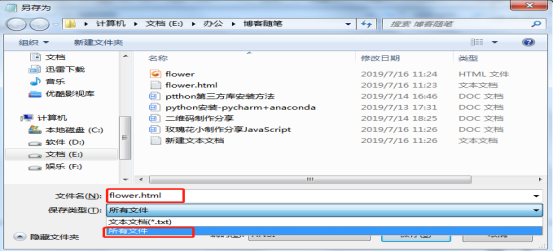
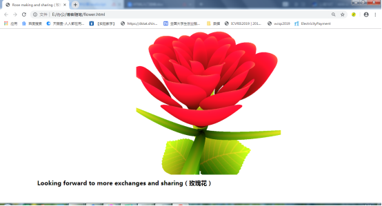

原文连接:https://www.cnblogs.com/xiaoguan-bky/p/11195945.html
分享一个玫瑰花的制作小方法，用小小的代码给自己的她送上一个不一样的玫瑰花。
玫瑰花代码由JavaScript实现，JavaScript 作为一种脚本语言， 被发明用于在 HTML 网页上使用，可以给HTML网页增加动态功能，让网页呈现各种特殊效果。
1.简单介绍
JavaScript 特点：
- 可以使用任何文本编辑工具编写，然后使用浏览器就可以执行程序。
- 是一种解释型脚本语言：代码不进行预编译，从上往下逐行执行，不需要进行严格的变量声明。
- 要要用来向 HTML 页面添加交互行为。
代码一般格式：
<html>
<head></head>
<body>
<script>
</script>
</body>
</html>
这里需要一些HTML的知识，代码整体结构是基于HTML的，JavaScript 代码放在 <script>……</script> 标签里，
2.具体制作及源码
首先创建一个.html文件，如果你有JavaScript 开发经验，拥有自己的编辑器，使用自己的即可，下面再分享一种纯小白的原始文本制作方法，（还没下载安装JavaScript相关的编辑器vim、Visual Studio Code等）
新建一个文本文档，菜单栏选择“文件-另存为”设置文件名称，类型。注意，名称后缀为.html，类型为所有文件。

创建如下：

玫瑰花制作是使用 JavaScript 实现多个不同的形状图来组成一个逼真的玫瑰花。共使用了 31 个形状：24 个花瓣，4 个萼片，2 个叶子和 1 根花茎，其中每一个形状图都用代码进行描绘。
源码：
<html>
<head>
<title>Rose making and sharing（玫瑰花）</title>
<meta http-equiv="Content-Type" content="text/html; charset=gbk">
</head>
<body style="margin-left:200px">
<div style="text-align: center">
<canvas id="c"></canvas>
</div>
<h1>Looking forward to more exchanges and sharing（玫瑰花）</h1>
<script type="text/javascript">
var canvas = document.getElementsByTagName('canvas')[0];
var context = canvas.getContext('2d');
var a = context;
var b = document.body;
var c = canvas;
document.body.clientWidth;
var zBuffer = [];
var SIZE = 777;
canvas.width = canvas.height = SIZE;
var h = -350;
function surface(a, b, c) {
if (c > 60) {
return {
x : Math.sin(a * 7) * (13 + 5 / (.2 + Math.pow(b * 4, 4))) - Math.sin(b) * 50,
y : b * SIZE + 50,
z : 625 + Math.cos(a * 7) * (13 + 5 / (.2 + Math.pow(b * 4, 4))) + b * 400,
r : a * 1 - b / 2, g : a };
}
var A = a * 2 - 1;
var B = b * 2 - 1;
if (A * A + B * B < 1) {
if (c > 37) {
var j = c & 1;
var n = j ? 6 : 4;
var o = .5 / (a + .01) + Math.cos(b * 125) * 3 - a * 300;
var w = b * h;
return {
x : o * Math.cos(n) + w * Math.sin(n) + j * 610 - 390,
y : o * Math.sin(n) - w * Math.cos(n) + 550 - j * 350,
z : 1180 + Math.cos(B + A) * 99 - j * 300,
r : .4 - a * .1 + Math.pow(1 - B * B, -h * 6) * .15 - a * b * .4 + Math.cos(a + b) / 5 + Math.pow(Math.cos((o * (a + 1) + (B > 0 ? w : -w)) / 25), 30) * .1 * (1 - B * B), g : o / 1e3 + .7 - o * w * 3e-6
};
}
if (c > 32) {
c = c * 1.16 - .15;
var o = a * 45 - 20;
var w = b * b * h;
var z = o * Math.sin(c) + w * Math.cos(c) + 620;
return {
x : o * Math.cos(c) - w * Math.sin(c),
y : 28 + Math.cos(B * .5) * 99 - b * b * b * 60 - z / 2 - h,
z : z,
r : (b * b * .3 + Math.pow((1 - (A * A)), 7) * .15 + .3) * b,
g : b * .7
};
}
var o = A * (2 - b) * (80 - c * 2);
var w = 99 - Math.cos(A) * 120 - Math.cos(b) * (-h - c * 4.9) + Math.cos(Math.pow(1 - b, 7)) * 50 + c * 2;
var z = o * Math.sin(c) + w * Math.cos(c) + 700;
return {
x : o * Math.cos(c) - w * Math.sin(c),
y : B * 99 - Math.cos(Math.pow(b, 7)) * 50 - c / 3 - z / 1.35 + 450, z : z,
r : (1 - b / 1.2) * .9 + a * .1,
g : Math.pow((1 - b), 20) / 4 + .05
};
}
}
setInterval(function() {
for ( var i = 0; i < 10000; i++) {
var part = i % 46;
var c = part / .74;
var point = surface(Math.random(), Math.random(), c);
if (point) {
var z = point.z;
var x = parseInt(point.x * SIZE / z - h);
var y = parseInt(point.y * SIZE / z - h);
var zBufferIndex = y * SIZE + x;
if ((typeof zBuffer[zBufferIndex] === "undefined") || (zBuffer[zBufferIndex] > z)) {
zBuffer[zBufferIndex] = z;
var r = -parseInt(point.r * h); var g = -parseInt(point.g * h);
var b = -parseInt(point.r * point.r * -80);
context.fillStyle = "rgb(" + r + "," + g + "," + b + ")";
context.fillRect(x, y, 1, 1);
}
}
}
}, 0);
</script>
</body>
</html>
3.总结
玫瑰花制作采用JavaScript 实现，是一个动态的精美的玫瑰花网页，展示效果美观，学习中其代码有一定的深度，主要结合应用了计算机图形创建方法。具有一定难度挑战。
效果图：
